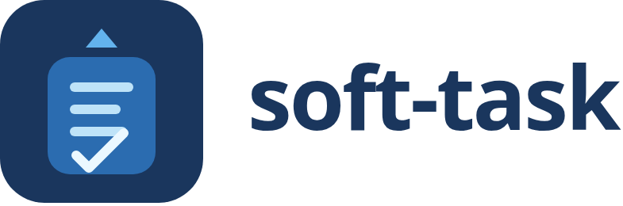

Даєте задачу — отримуєте робочий код
soft-task — фреймворк для AI-збірки «від брифу до приймання». Оркестратор веде політ, Softoria-HD пише код по тікетах, а гейти перевіряють результат вашими словами.

Як це працює
Ви викликаєте /soft-task у Cursor, OpenCode, Claude Code або Codex.
Агент у цій сесії стає оркестратором: планує, запускає виконавців, не пише код додатку сам.


Що ви отримуєте
Не чат із «ось можливий код», а артефакти в репозиторії й докази, що задача закрита.
Окремий коміт на тікет, зони файлів зафіксовані. Оркестратор не змішує контексти.
За замовчуванням Softoria-HD. Можна перемкнути на субагента вашого середовища.
У тікеті — scoped-команди. Оркестратор проганяє їх перед комітом. Stack detector підкаже dotnet / Pest / npm / pytest / go.
Етапи, гейти, стрічка подій на http://127.0.0.1:<port>/dashboard.html (EN / UK / RU).
Файли в .soft-task/: бриф, вимоги, notes, interfaces, тікети — можна читати й аудитити.
Для UI: Softoria-SD пише текстову спеку з макетів і перевіряє скріни після збірки.
Встановити
Потрібні Node 18+, OpenCode (для Softoria), ключ SOFTORIA_API_KEY і корпоративний VPN.
npx github:oleksandr-kupenko/soft-task install --harness all --yes
export SOFTORIA_API_KEY="…"
# у агенті:
/soft-task task Виправ пагінацію інвойсів — критерії в тікеті нижчеFAQ
Коротко. Деталі — у README на GitHub.
Хто такий оркестратор?
Модель і середовище, де ви викликали /soft-task. Він читає фази, крутить st.py, запускає виконавців. Код додатку сам не пише.
Дашборд і маленький сервер з’являються самі?
Так. У preflight оркестратор робить st.py init: піднімає python -m http.server і відкриває dashboard.html.
Як змінити виконавців?
У .soft-task/config.json: engines.executor (зараз softoria-hd), engines.reviewer — softoria-hd або harness, engines.vision — softoria-sd. Можна сказати це в чаті на старті — оркестратор запише оверрайд.
Можна зробити виконавцем модель з Codex / Cursor?
Рев’юер — так, через engines.reviewer: "harness" (субагент середовища). Окремого двигуна «executor = Codex» поки немає: тікети йдуть у Softoria через run.sh.
Як саме стартує Softoria-HD?
Через CLI OpenCode: engines/softoria-hd/run.sh → opencode run --auto --standalone --model softoria/Softoria-HD#max. Один тікет = один процес.
Навіщо VPN?
API Softoria за корпоративним VPN. Без нього запуск зависає або дає 5xx — спочатку увімкніть VPN.
Що з секретами?
Ключі в репозиторій не кладуться. soft-task просить лише ім’я змінної; значення — у вашому середовищі. Бриф перед записом ред’юситься.